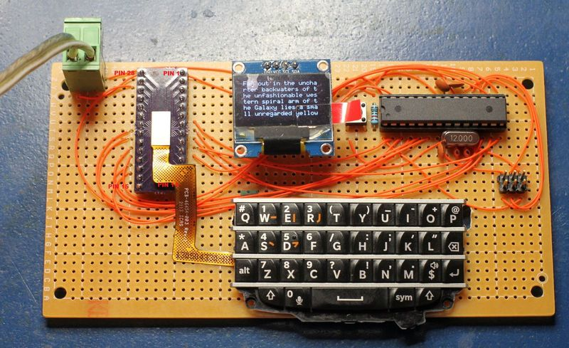
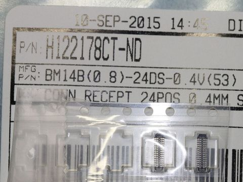
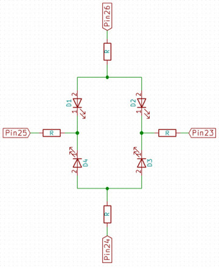
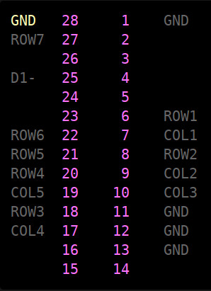

Blackberry Q10
鍵盤腳位
參考資訊：
1. hackaday
2. blackberry-q10-keyboard-connector
國外網友完成的作品

Connector

Backlight

Pinout

Reference source code:
byte rows[] = {2,3,4,5,6,7,8};
const int rowCount = sizeof(rows)/sizeof(rows[0]);
byte cols[] = {A0, A1, A2, 12, 11};
const int colCount = sizeof(cols)/sizeof(cols[0]);
bool keys[colCount][rowCount];
bool lastValue[colCount][rowCount];
bool changedValue[colCount][rowCount];
char keyboard[colCount][rowCount];
char keyboard_symbol[colCount][rowCount];
int keyboardLightSteps = 20;
int keyboardLight = 20;
bool symbolSelected;
void setup() {
keyboard[0][0] = 'q';
keyboard[0][1] = 'w';
keyboard[0][2] = NULL; // symbol
keyboard[0][3] = 'a';
keyboard[0][4] = NULL; // ALT
keyboard[0][5] = ' ';
keyboard[0][6] = NULL; // Mic
keyboard[1][0] = 'e';
keyboard[1][1] = 's';
keyboard[1][2] = 'd';
keyboard[1][3] = 'p';
keyboard[1][4] = 'x';
keyboard[1][5] = 'z';
keyboard[1][6] = NULL; // Left Shift
keyboard[2][0] = 'r';
keyboard[2][1] = 'g';
keyboard[2][2] = 't';
keyboard[2][3] = NULL; // Right Shit
keyboard[2][4] = 'v';
keyboard[2][5] = 'c';
keyboard[2][6] = 'f';
keyboard[3][0] = 'u';
keyboard[3][1] = 'h';
keyboard[3][2] = 'y';
keyboard[3][3] = NULL; // Enter
keyboard[3][4] = 'b';
keyboard[3][5] = 'n';
keyboard[3][6] = 'j';
keyboard[4][0] = 'o';
keyboard[4][1] = 'l';
keyboard[4][2] = 'i';
keyboard[4][3] = NULL; // Backspace
keyboard[4][4] = '$';
keyboard[4][5] = 'm';
keyboard[4][6] = 'k';
keyboard_symbol[0][0] = '#';
keyboard_symbol[0][1] = '1';
keyboard_symbol[0][2] = NULL;
keyboard_symbol[0][3] = '*';
keyboard_symbol[0][4] = NULL;
keyboard_symbol[0][5] = NULL;
keyboard_symbol[0][6] = '0';
keyboard_symbol[1][0] = '2';
keyboard_symbol[1][1] = '4';
keyboard_symbol[1][2] = '5';
keyboard_symbol[1][3] = '@';
keyboard_symbol[1][4] = '8';
keyboard_symbol[1][5] = '7';
keyboard_symbol[1][6] = NULL;
keyboard_symbol[2][0] = '3';
keyboard_symbol[2][1] = '/';
keyboard_symbol[2][2] = '(';
keyboard_symbol[2][3] = NULL;
keyboard_symbol[2][4] = '?';
keyboard_symbol[2][5] = '9';
keyboard_symbol[2][6] = '6';
keyboard_symbol[3][0] = '_';
keyboard_symbol[3][1] = ':';
keyboard_symbol[3][2] = ')';
keyboard_symbol[3][3] = NULL;
keyboard_symbol[3][4] = '!';
keyboard_symbol[3][5] = ',';
keyboard_symbol[3][6] = ';';
keyboard_symbol[4][0] = '+';
keyboard_symbol[4][1] = '"';
keyboard_symbol[4][2] = '-';
keyboard_symbol[4][3] = NULL;
keyboard_symbol[4][4] = NULL;
keyboard_symbol[4][5] = '.';
keyboard_symbol[4][6] = '\'';
Serial.begin(115200);
for(int x=0; x<rowCount; x++) {
Serial.print(rows[x]); Serial.println(" as input");
pinMode(rows[x], INPUT);
}
for (int x=0; x<colCount; x++) {
Serial.print(cols[x]); Serial.println(" as input-pullup");
pinMode(cols[x], INPUT_PULLUP);
}
// set pins for the keyboard backlight
pinMode(10, OUTPUT);
pinMode(9, OUTPUT);
setKeyboardBacklight(keyboardLight);
symbolSelected = false;
}
void readMatrix() {
int delayTime = 0;
// iterate the columns
for (int colIndex=0; colIndex < colCount; colIndex++) {
// col: set to output to low
byte curCol = cols[colIndex];
pinMode(curCol, OUTPUT);
digitalWrite(curCol, LOW);
// row: interate through the rows
for (int rowIndex=0; rowIndex < rowCount; rowIndex++) {
byte rowCol = rows[rowIndex];
pinMode(rowCol, INPUT_PULLUP);
delay(1); // arduino is not fast enought to switch input/output modes so wait 1 ms
bool buttonPressed = (digitalRead(rowCol) == LOW);
keys[colIndex][rowIndex] = buttonPressed;
if ((lastValue[colIndex][rowIndex] != buttonPressed)) {
changedValue[colIndex][rowIndex] = true;
} else {
changedValue[colIndex][rowIndex] = false;
}
lastValue[colIndex][rowIndex] = buttonPressed;
pinMode(rowCol, INPUT);
}
// disable the column
pinMode(curCol, INPUT);
}
if (keyPressed(0, 2)) {
symbolSelected = true;
}
}
bool keyPressed(int colIndex, int rowIndex) {
return changedValue[colIndex][rowIndex] && keys[colIndex][rowIndex] == true;
}
bool keyActive(int colIndex, int rowIndex) {
return keys[colIndex][rowIndex] == true;
}
bool isPrintableKey(int colIndex, int rowIndex) {
return keyboard_symbol[colIndex][rowIndex] != NULL || keyboard[colIndex][rowIndex] != NULL;
}
void setKeyboardBacklight(int keyboardLight) {
analogWrite(10, keyboardLight);
analogWrite(9, keyboardLight);
}
void printMatrix() {
for (int rowIndex=0; rowIndex < rowCount; rowIndex++) {
for (int colIndex=0; colIndex < colCount; colIndex++) {
// we only want to print if the key is pressed and it is a printable character
if (keyPressed(colIndex, rowIndex) && isPrintableKey(colIndex, rowIndex)) {
String toPrint;
if (symbolSelected) {
symbolSelected = false;
toPrint = String(keyboard_symbol[colIndex][rowIndex]);
} else {
toPrint = String(keyboard[colIndex][rowIndex]);
}
// keys 1,6 and 2,3 are Shift keys, so we want to upper case
if (keyActive(1,6) || keyActive(2,3)) {
toPrint.toUpperCase();
}
Serial.print(toPrint);
}
}
}
}
// a helper method that checks boundaries for the PWM values
void changeBackgroundLight(int pwmValue) {
if (pwmValue > 255) {
pwmValue = 255;
}
if (pwmValue < 0) {
pwmValue = 0;
}
keyboardLight = pwmValue;
setKeyboardBacklight(keyboardLight);
}
void loop() {
readMatrix();
printMatrix();
// key 3,3 is the enter key
if (keyPressed(3,3)) {
Serial.println();
}
// increase backlight if symbol key is pressed
if (keyPressed(0,2)) {
changeBackgroundLight(keyboardLight + keyboardLightSteps);
}
// decrease backlight if right shift key is pressed
if (keyPressed(2,3)) {
changeBackgroundLight(keyboardLight - keyboardLightSteps);
}
delay(10);
}